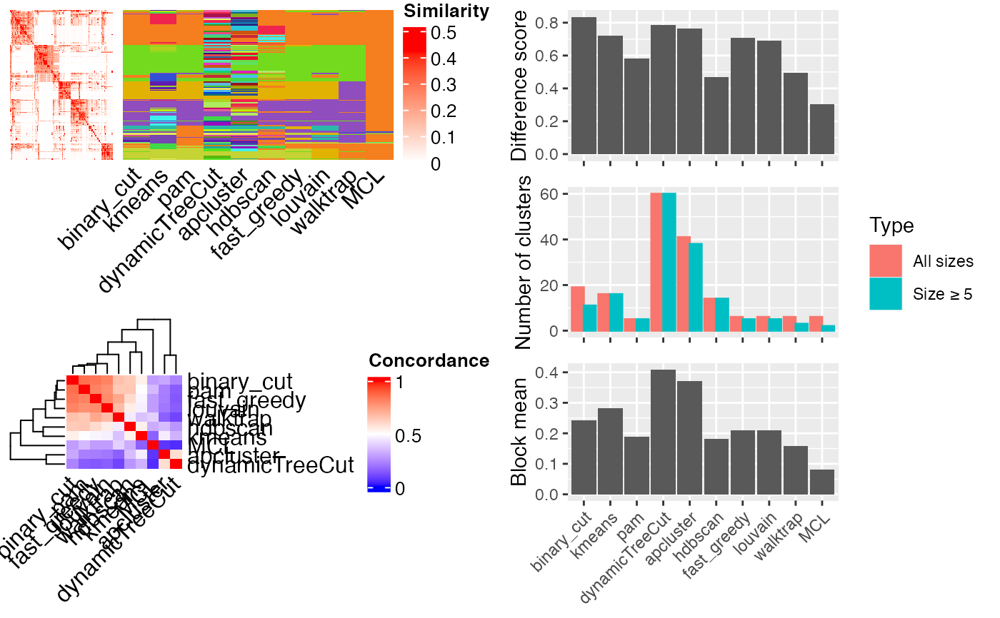
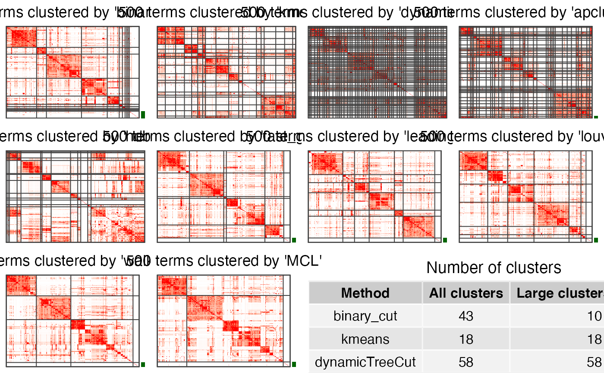

compare_clustering_methods.RdCompare clustering methods
compare_clustering_methods(mat, method = setdiff(all_clustering_methods(), "mclust"), plot_type = c("mixed", "heatmap"), nrow = 3, verbose = TRUE)
| mat | The similarity matrix. |
|---|---|
| method | Which methods to compare. All available methods are in |
| plot_type | See explanation in |
| nrow | Number of rows of the layout when |
| verbose | Whether to print messages. |
The function compares following clustering methods by default:
kmeanssee cluster_by_kmeans.
dynamicTreeCutmclustsee cluster_by_mclust. By default it is not included.
apclustersee cluster_by_apcluster.
hdbscansee cluster_by_hdbscan.
fast_greedysee cluster_by_igraph.
leading_eigensee cluster_by_igraph.
louvainsee cluster_by_igraph.
walktrapsee cluster_by_igraph.
MCLsee cluster_by_MCL.
binary_cutsee binary_cut.
This functon is basically a wrapper function. It calls the following two functions:
cmp_make_clusters: applies clustering with different methods.
cmp_make_plot: makes the plots.
No value is returned.
# \dontrun{ mat = readRDS(system.file("extdata", "random_GO_BP_sim_mat.rds", package = "simplifyEnrichment")) compare_clustering_methods(mat)#> Cluster 500 terms by 'binary_cut'... 43 clusters, used 1.301988 secs. #> Cluster 500 terms by 'kmeans'... 18 clusters, used 5.139116 secs. #> Cluster 500 terms by 'dynamicTreeCut'... 58 clusters, used 0.208364 secs. #> Cluster 500 terms by 'apcluster'... 39 clusters, used 1.140213 secs. #> Cluster 500 terms by 'hdbscan'... 13 clusters, used 0.258935 secs. #> Cluster 500 terms by 'fast_greedy'... 29 clusters, used 0.219573 secs. #> Cluster 500 terms by 'leading_eigen'... 30 clusters, used 0.390841 secs. #> Cluster 500 terms by 'louvain'... 29 clusters, used 0.09747195 secs. #> Cluster 500 terms by 'walktrap'... 26 clusters, used 0.3382041 secs. #> Cluster 500 terms by 'MCL'... 28 clusters, used 2.775569 secs.compare_clustering_methods(mat, plot_type = "heatmap")#> Cluster 500 terms by 'binary_cut'... 43 clusters, used 1.243493 secs. #> Cluster 500 terms by 'kmeans'... 18 clusters, used 5.063554 secs. #> Cluster 500 terms by 'dynamicTreeCut'... 58 clusters, used 0.2026269 secs. #> Cluster 500 terms by 'apcluster'... 39 clusters, used 1.259024 secs. #> Cluster 500 terms by 'hdbscan'... 13 clusters, used 0.2588141 secs. #> Cluster 500 terms by 'fast_greedy'... 29 clusters, used 0.139719 secs. #> Cluster 500 terms by 'leading_eigen'... 30 clusters, used 0.3822181 secs. #> Cluster 500 terms by 'louvain'... 29 clusters, used 0.130506 secs. #> Cluster 500 terms by 'walktrap'... 26 clusters, used 0.3448381 secs. #> Cluster 500 terms by 'MCL'... 28 clusters, used 2.757166 secs.#> Warning: conversion failure on 'Large clusters (size ≥ 5)' in 'mbcsToSbcs': dot substituted for <e2>#> Warning: conversion failure on 'Large clusters (size ≥ 5)' in 'mbcsToSbcs': dot substituted for <89>#> Warning: conversion failure on 'Large clusters (size ≥ 5)' in 'mbcsToSbcs': dot substituted for <a5>#> Warning: conversion failure on 'Large clusters (size ≥ 5)' in 'mbcsToSbcs': dot substituted for <e2>#> Warning: conversion failure on 'Large clusters (size ≥ 5)' in 'mbcsToSbcs': dot substituted for <89>#> Warning: conversion failure on 'Large clusters (size ≥ 5)' in 'mbcsToSbcs': dot substituted for <a5>#> Warning: conversion failure on 'Large clusters (size ≥ 5)' in 'mbcsToSbcs': dot substituted for <e2>#> Warning: conversion failure on 'Large clusters (size ≥ 5)' in 'mbcsToSbcs': dot substituted for <89>#> Warning: conversion failure on 'Large clusters (size ≥ 5)' in 'mbcsToSbcs': dot substituted for <a5>#> Warning: conversion failure on 'Large clusters (size ≥ 5)' in 'mbcsToSbcs': dot substituted for <e2>#> Warning: conversion failure on 'Large clusters (size ≥ 5)' in 'mbcsToSbcs': dot substituted for <89>#> Warning: conversion failure on 'Large clusters (size ≥ 5)' in 'mbcsToSbcs': dot substituted for <a5>#> Warning: conversion failure on 'Large clusters (size ≥ 5)' in 'mbcsToSbcs': dot substituted for <e2>#> Warning: conversion failure on 'Large clusters (size ≥ 5)' in 'mbcsToSbcs': dot substituted for <89>#> Warning: conversion failure on 'Large clusters (size ≥ 5)' in 'mbcsToSbcs': dot substituted for <a5>#> Warning: conversion failure on 'Large clusters (size ≥ 5)' in 'mbcsToSbcs': dot substituted for <e2>#> Warning: conversion failure on 'Large clusters (size ≥ 5)' in 'mbcsToSbcs': dot substituted for <89>#> Warning: conversion failure on 'Large clusters (size ≥ 5)' in 'mbcsToSbcs': dot substituted for <a5>#> Warning: conversion failure on 'Large clusters (size ≥ 5)' in 'mbcsToSbcs': dot substituted for <e2>#> Warning: conversion failure on 'Large clusters (size ≥ 5)' in 'mbcsToSbcs': dot substituted for <89>#> Warning: conversion failure on 'Large clusters (size ≥ 5)' in 'mbcsToSbcs': dot substituted for <a5># }